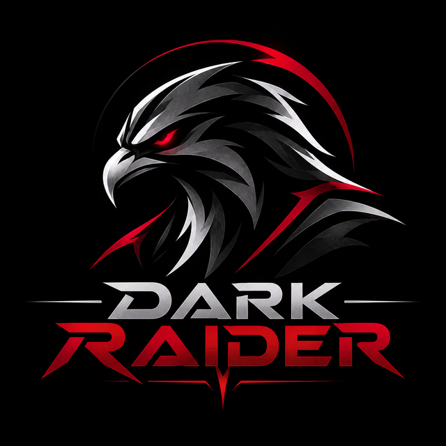

Checking…Welcome back, raider.
Our private control room. Check on the bot, run team mode and keep the soundboard in line.
Checking…
–Servers
–Members online
–% of – members are online
- Status
- –
- Latency
- –
- Uptime
- –
What the bot does
Everything Dark Raider handles for our server.
FPS team mode in four steps
Split one voice channel into two private squads, then merge everyone back when the match ends. Admin only.
Pick the channel
/team setup links the voice channel you play in.
Assign players
/team assign, or /team panel on so players choose.
Go live
/team on creates two private channels and moves each team.
Match over
/team off moves everyone back and deletes the temp channels.